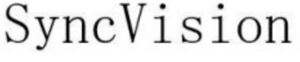

Trade Mark Journal No.2025/046 14 November 2025
WO0000001883497 (7,9)
Office of origin: China
Date of International Registration:30 June 2025
Date of designation in the UK:
30 June 2025

International priority date claimed: 11 March 2025
(China)
(83951301)
International priority date claimed: 11 March 2025
(China)
(83963566)
- Class 7
- Vacuum cleaners; dust exhausting installations for cleaning purposes; rechargeable sweepers; cleaning appliances utilizing steam; vacuum cleaner hoses; automatic vacuum cleaners; suction nozzles for vacuum cleaners; brushes for vacuum cleaners; machines and apparatus for cleaning, electric; hand-held vacuum cleaners; dust filters and bags for vacuum cleaners; vacuum cleaner attachments for disseminating perfumes and disinfectants; washing apparatus; machines and apparatus for carpet shampooing, electric; dust removing installations for cleaning purposes; road sweeping machines, self-propelled.
- Class 9
- Telepresence robots; digital signal processors; digital voice signal processors; transmitters of electronic signals; electronic navigational and positioning apparatus and instruments; radar apparatus; navigational instruments; sound transmitting apparatus; digital sound processors; infrared detectors; distance measuring apparatus; sensors.
Beijing Roborock Technology Co., Ltd.
Representative: BEIJING INTELLEGAL INTELLECTUAL PROPERTY AGENT LTD., B1605, B1606, B1607, Floor 16th,, No. 5, Huizhong Road,, Chaoyang District, Beijing, CHINA